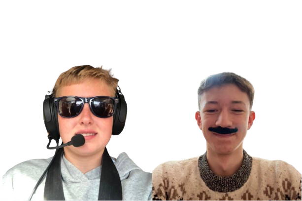
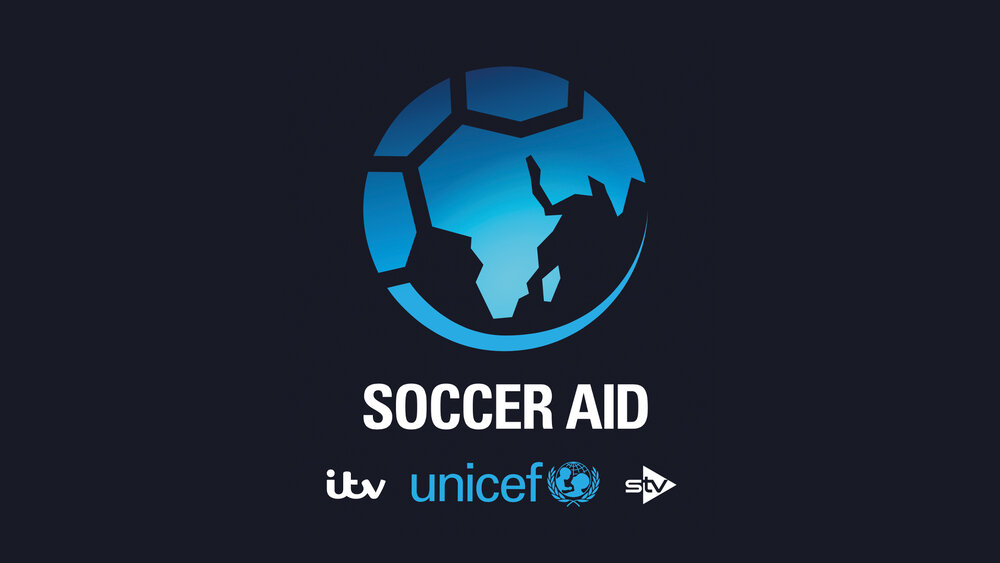

Jag Esports

When you play for Ajax, you're part of something bigger than just a football team. This club is built on history, on philosophy, and on trust in youth. From the moment you step into De Toekomst (our academy), you're taught to play the Ajax way — fast, technical, and fearless. Every training session pushes you, every match means something. We've both come through different paths, but here, we're united by the same vision: to keep the legacy alive while writing the next chapter. From the Cruyff days to now, Ajax has always been about more than trophies — it's about identity, development, and daring to dream big. This is Ajax. This is home.


At Bayern Munich, excellence isn't a goal — it's the standard. From the moment you walk into Säbener Straße, you feel the weight of tradition and the drive for success. This club has a winning mentality built into its DNA. Every training, every match, every moment — you’re expected to give everything. We come from different places, but here, we wear the same crest with pride. The club expects a lot from us — and we expect a lot from ourselves. Whether it's Bundesliga titles, Champions League nights, or just pushing each other to be better, Bayern is about more than just football. It’s about discipline, unity, and never settling for second best. Mia san Mia isn't just a slogan. It's who we are.
Liverpool is more than just a football club — it's a family, a city, a heartbeat. From the moment you arrive, you feel the energy of Anfield, the passion of the fans, and the legacy of legends. It's not just about the trophies; it's about the pride in wearing this jersey, the unity we share on the pitch, and the unwavering support we get from the people of Liverpool. We come from different backgrounds, but when we step onto that field, we're united by one goal: to give everything for the badge and for the fans. Whether we're facing rivals in the Premier League or fighting for glory in Europe, it's always about one thing — winning together, with heart, with belief, and with courage. You'll never walk alone (Unless your name is Trent).

Mumbai City FC is more than just a club — it's the spirit of the city, the heartbeat of its fans. From the moment we step onto the pitch at the Mumbai Football Arena, we feel the energy of this vibrant city behind us. It's not just about playing football; it's about representing the dreams and passion of millions who live here. Whether we're challenging for the ISL title or showing the world the talent coming out of India, every match is an opportunity to make history. The unity, the determination, and the pride we feel wearing the Mumbai City crest is something we carry with us every time we play. We come from different places, but in Mumbai, we are one. This is a city that never gives up, and that's the spirit we bring to the field. Mumbai City, Mumbai heart.
Mamelodi Sundowns isn't just a club — it's a movement. From the very first moment you pull on the yellow jersey, you understand what it means to represent this team: pride, excellence, and an unrelenting desire to win. The energy of the supporters, the spirit of the club, and the ambition to always be the best — that's what drives us. We come from different places, but when we step onto the field, we share the same dream: to take Sundowns to greater heights. The journey to dominance in South African football is far from over, and every match is a chance to prove we're the best. From league titles to continental glory, this club never settles. It's not just about winning — it's about setting the standard and leading the way for the future of African football. Downs, we rise.

Mallorca is more than just a football club — it's a revolution. From the moment you step onto the pitch at Estadi de Son Moix, you feel the passion of the fans and the weight of history. This club is built on resilience, determination, and a commitment to excellence. We come from different backgrounds, but when we wear the red and black, we are united by one goal: to bring glory back to this island. Every match is a chance to show the world what Mallorca is made of. Whether we're battling in La Liga or making our mark in Europe, we play with heart, with pride, and with the spirit of our island behind us. We are Mallorca, and we are here to make history.
Real Madrid is not just a club it is a legacy. Every time we wear the white jersey, we carry the weight of history with us. The passion of the fans, the drive to succeed, and the pursuit of greatness are all part of what makes this club special. From the Bernabeu to the hearts of supporters around the world, we play for more than just ourselves — we play for something bigger. We come from different backgrounds, but when we step onto the pitch, we are united by one goal: to win and add to the legacy of this incredible club. Whether it is winning La Liga, conquering Europe, or continuing the tradition of excellence, Real Madrid always aims for the top. This is not just football, this is Real Madrid, and we are here to continue writing history.

PSG is not just a football club — it's a lifestyle. From the moment you step into the Parc des Princes, you feel the energy of the city and the passion of the fans. This club is built on ambition, style, and a commitment to excellence. We are not just players; we are ambassadors of a brand that represents the best of Paris. We come from different backgrounds, but when we wear the blue and red, we are united by one goal: to bring glory to this city. Every match is an opportunity to showcase our talent and make history. Whether it's winning Ligue 1 or making our mark in Europe, PSG is about more than just football. It's about setting trends, breaking boundaries, and showing the world what Paris is all about. Allez Paris!
Soccer Aid is not just a team, it's a family. From the moment you join, you become part of something bigger than yourself. We are united by our love for the game and our commitment to each other. Every training session, every match, every moment is an opportunity to grow together and push each other to be better. We come from different backgrounds, but when we step onto the field, we share the same dream: to win and make our mark in the world of football. Whether it's local tournaments or international competitions, we play with heart, with pride, and with the spirit of teamwork. Together, we are unstoppable.
Wrexham means everything to us — the club, the town, the people. Playing here is more than just football. It is about representing a community that lives and breathes the game. Every match at the Racecourse Ground feels like something special — you can feel the history in the stands and the belief in the air. We come from different places, but Wrexham has brought us together. There is a real sense of pride when you pull on the red shirt. Whether we are fighting for promotion, pushing through tough fixtures, or celebrating a big win, we know we are part of something much bigger than ourselves. Wrexham is rising — and we are proud to be part of the journey.


jaguaresports2000@gmail.com
+44 7435963366
ACS Egham International School
London Road, Egham, Surrey, TW20 0HS
United Kingdom